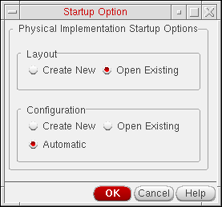

Layout XL Launched from a Schematic View
A schematic cellview is the only valid connectivity reference for a Layout XL session. If you do not have a schematic view of your design, you first need to generate one.
When you start Layout XL from a schematic, you need to specify:
- Layout: Whether to create a new layout view or use an existing one.
-
Configuration: Whether the layout view is to be opened in the context of a new, an existing, or an automatic physical configuration view.

If you do not need to use any of the features provided by the Configure Physical Hierarchy command, you can choose Automatic mode. This ensures that Layout XL functions the same way as in previous releases, handling all operations related to the physical configuration view automatically.
When Layout XL initializes, the schematic view is re-opened in the context of the physical configuration view being used for the session, which might be different from the configuration the schematic was using previously. The schematic window banner updates to indicate the name of the physical configuration view currently being used. You might need to re-extract the schematic view to take into account the settings in the physical configuration view. The system informs you if this extraction is required.
If you close the Layout XL session by closing the layout window only, the schematic view is re-opened with no physical configuration context.
Related Topics
Generating a Schematic View from a CDL Netlist
Starting Layout XL with an Automatic Physical Configuration View
Starting Layout XL with a New Physical Configuration View
Starting Layout XL with an Existing Physical Configuration View
Return to top